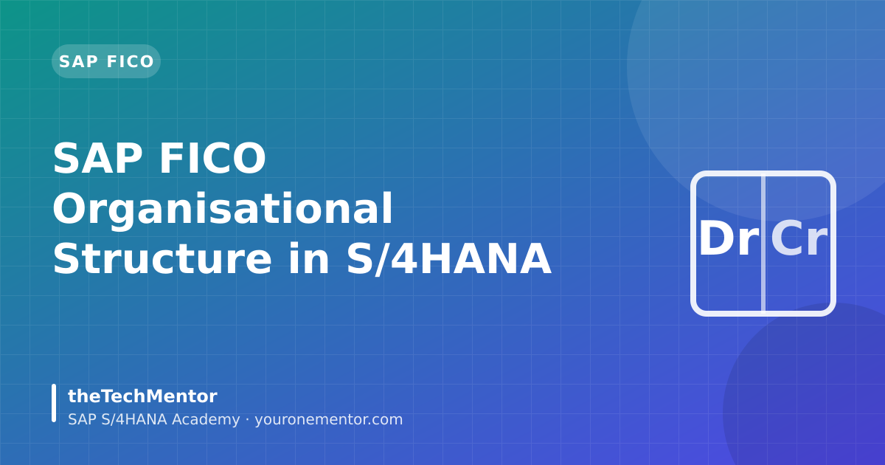
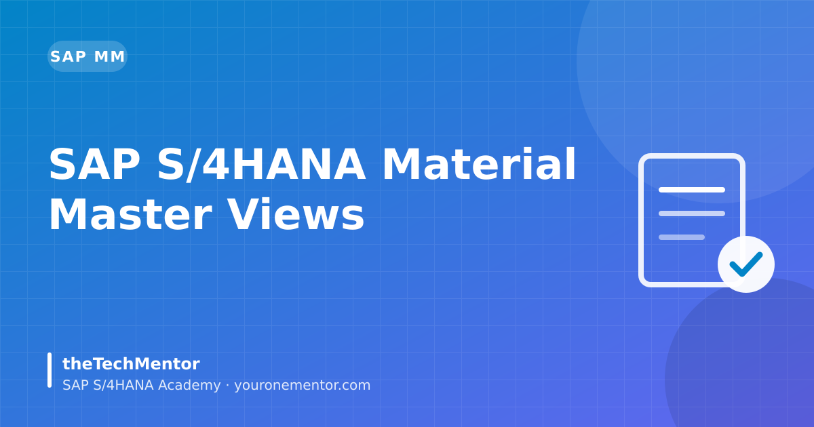

LFA1
The shift to SAP S/4HANA, underpinned by the SAP HANA in-memory database, fundamentally changed how we develop applications in ABAP. Gone are the days of retrieving large datasets to the application server and then processing them with complex ABAP loops and calculations. This approach, known as "data-to-code," becomes a major bottleneck on HANA.
The modern paradigm, especially for ABAP on HANA, is code pushdown. Instead of bringing data to the ABAP layer, we push the complex data-intensive logic down to the HANA database, leveraging its immense processing power. This article will explain why code pushdown is critical, detail the primary techniques—CDS Views and ABAP Managed Database Procedures (AMDP)—and provide practical ABAP examples for consultants and freshers looking to optimize their S/4HANA implementations.
By understanding and applying code pushdown, you'll be able to write highly performant ABAP applications that fully harness the power of SAP HANA, a skill crucial for any S/4HANA developer or architect today.
- Code pushdown is essential for ABAP on HANA, shifting data-intensive logic from the application server to the HANA database for superior performance.
- Core Data Services (CDS) Views are the primary declarative technique for pushdown, ideal for joins, aggregations, and virtual data models.
- ABAP Managed Database Procedures (AMDP) provide procedural pushdown using database-native languages like SQLScript for complex logic.
- Enhanced Open SQL should be the first choice for simpler pushdown, as it now supports many aggregations and expressions directly.
- For MM and EWM consultants, understanding code pushdown is crucial for optimizing reports, designing efficient enhancements, and leveraging S/4HANA's real-time capabilities.
- Always strive for maximum pushdown, choosing the right technique (Open SQL > CDS > AMDP) for maintainability and performance.
01Understanding the Need for Code Pushdown in ABAP on HANA
Historically, ABAP applications were optimized for traditional relational databases. This meant fetching raw data from the database into the application server memory and then performing aggregations, filters, and complex calculations there. This "data-to-code" paradigm was efficient when database operations were slow and network latency was a concern.
However, with SAP HANA, we have an in-memory, column-oriented database designed for real-time analytics and massive data processing. The bottleneck now shifts to transferring large volumes of data from HANA to the ABAP application server. Code pushdown addresses this by executing data-intensive logic directly within the HANA database layer, where the data resides.
The benefits are clear: significantly faster report execution, real-time analytics, and reduced load on the application server. For MM and EWM consultants, this translates to quicker stock evaluations, faster inventory reports, and near real-time visibility into warehouse operations.
02Core Principles of Code Pushdown Techniques
Code pushdown is not a single technique but a philosophy applied through various SAP tools and frameworks. The core idea is always the same: delegate processing to the database layer. Here are the fundamental principles:
- Data Proximity: Process data where it lives. HANA's in-memory architecture makes data access incredibly fast at the database layer.
- Declarative vs. Procedural: Prioritize declarative SQL-based logic over procedural ABAP loops where possible. Declarative statements allow the database optimizer to determine the most efficient execution plan.
- Minimizing Data Transfer: Only transfer the final, aggregated, or filtered results from the database to the application server, not the raw, unprocessed data.
- Leveraging Database Capabilities: Utilize HANA-specific features like column stores, compression, and advanced SQL functions directly.
These principles guide the choice of specific code pushdown techniques, ensuring that ABAP applications are built for optimal performance on the S/4HANA platform.
03Key Code Pushdown Techniques: CDS Views, AMDP, and Open SQL
SAP provides several powerful tools to implement code pushdown. The most prominent ones are Core Data Services (CDS) Views and ABAP Managed Database Procedures (AMDP). Modern Open SQL also plays a vital role.
1. Core Data Services (CDS) Views
CDS Views are the primary and recommended way to achieve code pushdown in S/4HANA. They define semantic data models directly in the database, acting as virtual data models. They are written in DDL (Data Definition Language) and are database-agnostic, meaning they work across different databases, although they are highly optimized for HANA.
- Virtual Data Model: CDS Views create views on top of existing database tables. They don't store data themselves.
- Rich Capabilities: Support associations, aggregations, calculations, joins, and expressions directly in the database.
- Consumption: Can be consumed by ABAP programs using Open SQL, SAP Fiori applications, BI tools, and even other CDS Views.
- Analytical Power: Crucial for analytical applications and real-time reporting due to their ability to push down complex calculations.
2. ABAP Managed Database Procedures (AMDP)
AMDPs allow you to implement database procedures directly in ABAP, but they are executed natively on the database. Unlike CDS Views, which are declarative, AMDPs are procedural. They are typically written in SQLScript (for HANA) or other database-specific languages.
- Procedural Logic: Ideal for complex, procedural logic that is difficult or inefficient to express purely in declarative SQL, such as iterative calculations, complex branching, or error handling.
- Performance: Offers excellent performance as the entire procedure runs on the database, avoiding data transfer to the application server.
- ABAP Integration: Defined and managed within ABAP classes (implemented as interfaces
IF_AMDP_MARKER_HDB). This means full ABAP lifecycle management, debugging, and transport.
3. Enhanced Open SQL
Modern Open SQL in ABAP has been significantly enhanced to leverage HANA's capabilities. Many features previously requiring explicit code pushdown techniques can now be achieved directly through Open SQL syntax, which the database optimizer then processes efficiently.
- Aggregations and Grouping: Direct support for
AVG,SUM,COUNT,MIN,MAX, andGROUP BYclauses. - Expressions: Inline expressions and calculations (e.g.,
CASE WHEN, arithmetic operations). - Joins: Complex joins can be defined directly.
- SQL Views: Can consume CDS Views and traditional database views.
Always try to achieve your logic with enhanced Open SQL first, then consider CDS Views, and finally AMDP for highly complex, procedural, database-specific scenarios.
04Practical Example: Optimizing a Material Stock Report using a CDS View
Let's consider a common MM scenario: creating a report to show the current stock quantity and value for materials across storage locations. Traditionally, this might involve fetching data from MARC, MARD, MBEW, and MAKT, then looping through to calculate totals.
With code pushdown, we can define a CDS View to perform these joins and aggregations at the database level. Assume we need the total unrestricted stock quantity and value per material, plant, and storage location.
Old Approach (Conceptual ABAP on Application Server):
SELECT * INTO TABLE lt_marc FROM marc WHERE werks = '1000'." Fetch all plant data
LOOP AT lt_marc ASSIGNING <fs_marc>.
SELECT * INTO TABLE lt_mard FROM mard WHERE matnr = <fs_marc>-matnr AND werks = <fs_marc>-werks.
" ... more selects for MBEW, MAKT, then loop and sum ...
ENDLOOP.This is highly inefficient. Now, let's use a CDS View:
New Approach (CDS View and ABAP consumption):
Step 1: Define the CDS View in ADT (ABAP Development Tools)
@AbapCatalog.sqlViewName: 'Z_C_MM_MATSTOCK'
@AbapCatalog.compiler.compareFilter: true
@AbapCatalog.preserveKey: true
@AccessControl.authorizationCheck: #NOT_REQUIRED
@EndUserText.label: 'Material Stock Quantity and Value'
define view ZI_MM_MaterialStock_V
as select from marc as PlantData
inner join mard as StorageData on PlantData.matnr = StorageData.matnr
and PlantData.werks = StorageData.werks
inner join makt as MaterialText on PlantData.matnr = MaterialText.matnr
and MaterialText.spras = $session.system_language
inner join mbew as ValuationData on PlantData.matnr = ValuationData.matnr
and PlantData.werks = ValuationData.werks
{
key PlantData.matnr as Material,
key PlantData.werks as Plant,
key StorageData.lgort as StorageLocation,
MaterialText.maktx as MaterialDescription,
StorageData.labst as UnrestrictedStockQty, " Unrestricted-use stock
ValuationData.verpr as MovingAveragePrice, " Moving average price
ValuationData.verpr * StorageData.labst as TotalStockValue
}
where PlantData.werks = '1000';
This CDS View ZI_MM_MaterialStock_V joins MARC, MARD, MAKT, and MBEW directly on the database and even calculates TotalStockValue at the database layer. This reduces the data transferred to the ABAP application server to just the final, calculated fields.
Step 2: Consume the CDS View in an ABAP Program
REPORT z_mm_stock_report_cds.
DATA: lt_material_stock TYPE TABLE OF zi_mm_materialstock_v.
SELECT * FROM zi_mm_materialstock_v INTO TABLE @lt_material_stock.
cl_demo_output=>display( lt_material_stock ).
The ABAP code becomes much simpler and more readable. All the heavy lifting (joins, calculations) is performed by the HANA database via the CDS View. This pattern is crucial for enhancing performance in logistics reports, inventory analysis, and any scenario requiring aggregation of material master data.
05Implementing Complex Logic with ABAP Managed Database Procedures (AMDP)
While CDS Views are excellent for declarative logic, sometimes you encounter scenarios demanding procedural constructs that are best executed at the database level. This is where AMDPs shine. Let's imagine a more complex calculation for inventory aging, requiring iterative processing or complex conditional logic that is difficult to express efficiently in a single CDS view.
Scenario: Custom Stock Aging Calculation
Suppose you need to calculate stock aging for materials, involving multiple steps like determining receipt dates, tracking movements, and applying specific business rules that involve temporary tables or cursors, too complex for a single CDS. An AMDP can encapsulate this.
Step 1: Define an ABAP Class with AMDP Interface
CLASS zcl_mm_inventory_aging DEFINITION
PUBLIC
FINAL
CREATE PUBLIC .
PUBLIC SECTION.
INTERFACES if_amdp_marker_hdb.
METHODS calculate_aging
IMPORTING
iv_plant TYPE werks_d
EXPORTING
et_aging_data TYPE tt_aging_data.
TYPES: BEGIN OF ts_aging_data,
matnr TYPE matnr,
werks TYPE werks_d,
aging_days TYPE i,
END OF ts_aging_data,
tt_aging_data TYPE STANDARD TABLE OF ts_aging_data WITH EMPTY KEY.
ENDCLASS.
Step 2: Implement the AMDP Method (in SQLScript)
CLASS zcl_mm_inventory_aging IMPLEMENTATION.
METHOD calculate_aging BY DATABASE PROCEDURE
FOR HDB
LANGUAGE SQLSCRIPT
OPTIONS READ-ONLY
USING matdoc.
" Declare local table variable for intermediate results
DECLARE lt_matdoc_filtered TABLE (
matnr NVARCHAR(18),
werks NVARCHAR(4),
mblnr NVARCHAR(10),
mjahr NVARCHAR(4),
zeile NVARCHAR(4),
budat DATE
);
" Filter MATDOC for relevant movements (e.g., initial receipts, goods receipts)
INSERT INTO lt_matdoc_filtered
SELECT
matnr,
werks,
mblnr,
mjahr,
zeile,
budat
FROM matdoc
WHERE werks = :iv_plant
AND bwart IN ('101', '501'); " Example: Goods Receipt
" Now perform complex aging logic
" For simplicity, let's just get the oldest receipt date for each material for demonstration
et_aging_data = SELECT
matnr,
werks,
DAYS_BETWEEN(MIN(budat), CURRENT_DATE) AS aging_days
FROM lt_matdoc_filtered
GROUP BY matnr, werks;
ENDMETHOD.
ENDCLASS.
In this example, the calculate_aging method is marked BY DATABASE PROCEDURE FOR HDB LANGUAGE SQLSCRIPT. The logic inside, written in SQLScript, filters material documents (matdoc - the simplified S/4HANA material document table) and calculates the aging directly on HANA. The ABAP code then simply calls this method.
Step 3: Call the AMDP Method from an ABAP Program
REPORT z_mm_aging_report_amdp.
DATA: lo_aging_calculator TYPE REF TO zcl_mm_inventory_aging,
lt_aging_results TYPE zcl_mm_inventory_aging=>tt_aging_data.
CREATE OBJECT lo_aging_calculator.
lo_aging_calculator->calculate_aging(
EXPORTING
iv_plant = '1000'
IMPORTING
et_aging_data = lt_aging_results
).
cl_demo_output=>display( lt_aging_results ).
This demonstrates how an AMDP can handle specific, complex logic that benefits from native database execution, all while being managed within the ABAP development environment.
06Common Mistakes and Best Practices in Code Pushdown
While code pushdown offers immense benefits, missteps can negate its advantages. Be aware of these common pitfalls:
- Partial Pushdown: Pushing some logic but still fetching too much raw data to the application layer for final processing. Aim for maximum pushdown.
- Over-complicating Simple Scenarios: Don't use AMDPs for simple joins and aggregations that a CDS View or enhanced Open SQL can handle more elegantly and maintainably.
- Ignoring Database-Agnosticism: Relying too heavily on HANA-specific SQLScript in AMDPs when a generic solution would suffice, making future database migrations harder (though less likely in S/4HANA).
- Lack of Authorization Checks: Ensure your CDS Views and AMDPs respect SAP's authorization concept. CDS Views support DCL (Data Control Language) for authorization.
- Performance Tuning Neglect: Even with code pushdown, poorly designed CDS Views or AMDPs can be slow. Always analyze execution plans in HANA Studio.
Remember, code pushdown is about leveraging the database intelligently, not just blindly moving code. Proper design and analysis are key.
07ABAP on HANA for MM and EWM Consultants
Even if your primary role is not ABAP development, understanding ABAP on HANA and code pushdown is vital for MM and EWM consultants in India.
- Performance Understanding: When users complain about slow reports (e.g., inventory aging, stock valuation, slotting analysis), understanding code pushdown helps you identify if the issue is in the ABAP code's data access rather than just network or application server issues.
- Functional Enhancements: You will often work with ABAP developers for custom reports or enhancements. Knowing the capabilities of CDS and AMDP allows you to propose more efficient solutions and define requirements that leverage HANA's power for real-time insights in procurement, warehouse management, and automatic processes.
- Future-Proofing: S/4HANA is the future. Custom code that does not embrace code pushdown will perform poorly and may even be incompatible with future S/4HANA innovations like SAP Joule AI or embedded analytics.
- Debugging: While not directly developing, you might assist in debugging issues related to custom reports or processes. Understanding where data processing occurs (application vs. database layer) is crucial for efficient troubleshooting.
Familiarity with these concepts empowers you to be a more effective consultant in an S/4HANA environment, driving better solutions for your clients, whether in embedded EWM or core MM scenarios.
08Interview Questions on ABAP on HANA and Code Pushdown
For freshers and experienced professionals in India, ABAP on HANA is a hot topic in interviews. Here are common questions:
| Question | Key Points for Answer |
|---|---|
| What is code pushdown in ABAP on HANA and why is it essential? | Moving data-intensive logic to the HANA database. Essential for performance, leveraging HANA's in-memory capabilities, and avoiding data transfer bottlenecks. |
| Name different techniques for code pushdown. When would you use each? | CDS Views: Declarative, virtual data models, good for joins/aggregations, analytics. AMDP: Procedural, for complex logic, database-specific (SQLScript). Enhanced Open SQL: First choice for simple pushdown, built-in aggregations. |
| Explain the benefits of CDS Views over classic ABAP database access. | Performance (DB execution), reusability, simplified ABAP, supports annotations (OData, UI), DCL for authorizations. |
| What are ABAP Managed Database Procedures (AMDP)? What are their advantages and disadvantages? | ABAP-managed database procedures executed natively on DB (e.g., SQLScript). Advantages: High performance for complex procedural logic. Disadvantages: Database-specific, less declarative than CDS. |
| How does the data model simplification in S/4HANA (e.g., MATDOC vs. MKPF/MSEG) impact code pushdown? | Fewer tables to join means simpler CDS/AMDP logic and even better performance on HANA. Centralized tables like ACDOCA make financial reporting pushdown more efficient. |
| Describe a real-world scenario where you would use a CDS View for an MM/EWM report. | Generating a list of materials with current stock, total value, and supplier details. Joins MARC, MARD, MBEW, LFA1, calculates value. |
Get the 40+ lesson playlist, the most-asked interview questions and our 90-day roadmap on WhatsApp.
?Frequently asked questions
What are common ABAP on HANA interview questions for experienced consultants?
Experienced consultants are often asked about the 'why' behind code pushdown, comparisons between CDS Views and AMDPs (advantages, disadvantages, use cases), how to handle authorization in CDS, performance tuning of pushdown logic, and real-world examples from past projects. You should also be prepared to discuss the impact of S/4HANA data model changes on ABAP development.
What are the key ABAP on HANA topics to learn for a developer?
Key topics include: understanding the SAP HANA architecture, advanced Open SQL syntax, Core Data Services (CDS) for data modeling and analytics, ABAP Managed Database Procedures (AMDP) for native database procedures, performance analysis tools (SQL Trace, SQL Monitor, ATC), and integrating Fiori/UI5 applications with CDS-based services. Mastering ABAP Development Tools (ADT) in Eclipse is also fundamental.
How can learning ABAP on HANA help with career opportunities and jobs?
ABAP on HANA skills are in high demand across India, particularly as more companies migrate to S/4HANA. It's no longer enough to just know classic ABAP. Proficiency in code pushdown techniques makes you a valuable asset, opening doors to roles as S/4HANA ABAP developers, architects, and technical consultants. This can lead to significant salary growth, often in the ₹8-18 LPA range for experienced professionals, depending on skills and company.
Is ABAP on HANA certification useful?
Yes, an SAP certification in ABAP on HANA (e.g., C_TADM_ADM_70) can definitely be useful. It validates your skills and knowledge, making your resume stand out in a competitive job market. While practical experience is paramount, certification can provide an initial advantage, especially for freshers or those looking to transition roles.
Who is Anshuman Behuria and what is his role at theTechMentor?
Anshuman Behuria is the lead SAP mentor at theTechMentor, with over 12 years of extensive experience in S/4HANA implementation. He guides learners and consultants, providing practical, first-hand insights across various SAP modules, including MM, EWM, FICO, ABAP, BASIS, and end-to-end logistics.

Mastering SAP FICO Organisational Structure in S/4HANA: Company Code, Controlling Area, and Chart of Accounts Mastering SAP MM Organisational Structure in S/4HANA: Company Code, Plant, Storage Location, & Purchasing Org
Mastering SAP MM Organisational Structure in S/4HANA: Company Code, Plant, Storage Location, & Purchasing Org
Mastering Material Master Views in S/4HANA: A Field-by-Field Deep Dive for MM & EWM ConsultantsLearn SAP hands-on with theTechMentor
Live weekday & weekend batches or 24/7 recorded courses, with S/4HANA practice server access and interview preparation.